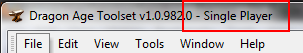
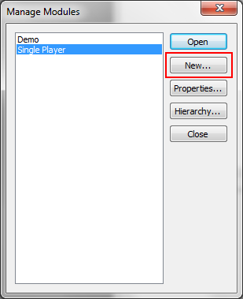
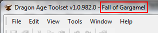

Step by Step: Create A Module
Step by Step: Installing the Toolset
The Step by Step series of articles are meant to be a 100% walk through of an activity, complete with pertinent details and screenshots of every step of the process.
Modules
The toolset comes with two modules installed.
- The Single Player module is the campaign, and shouldn't be edited unless you want to modify the Dragon Age campaign itself. If you're creating an addin or mod for the official campaign, this is the module in which you'll want to work.
- The Demo module is installed for demonstration purposes by Bioware, and several other tutorials and forum posts refer to it.
{kind=link}

You can easily determine which module you're editing by looking at the title bar of the toolbox. In the image the currently edited module is highlighted by the red rectangle; the example has the Single Player module loaded.
Until you're comfortable with the toolkit it's best to work in a module separate from either of the above modules.
Create A Module
{kind=link}
To create a module click File then Manage Modules.
{kind=link}

The Manage Modules window will appear. Click the New button to create a module.
{kind=link}
The Object Inspector window appears. All of these properties can be changed at a later date; our primary concern are the Name and UID properties.
- Name
- The name of the module is displayed to the player and is used if a Description String ID has not been set.
- UID
- The UID is not intended to be a GUID. It is used in some configuration files and is the name of the directory to which the module is exported.
You will return to the Module Properties often as there are several other important properties here.
Notes:
- Modules cannot be deleted from the toolset once they're created.
- The only valid module type is currently Addin. A module created as an Addin will appear under Other Campaigns in Dragon Age.
{kind=link}
The image shows the module properties for the Fall of Gargamel module which we will be using for demonstration purposes.
Enter the values shown in the appropriate area, or create your own, and hit OK to continue with the module creation process.
{kind=link}
This image gives you an idea as to where the values we're entering are being used. The menu shown is the Other Campaigns menu off the Dragon Age main menu. (The module will not show up until we export at least a portion of it; this is handled later.)
As you can see the name of our addin matches the Name property we entered in the Object Inspector window.
{kind=link}
Here we can see that the directory in which our addin lives is named Gargamel, which corresponds to the UID value entered in the Object Inspector. We can also see the various DLC items that have been installed from the game.
Note: On a Windows XP computer you'll find this directory in your My Documents folder.
{kind=link}
Once the Object Inspector closes you'll be returned to the Manage Modules window. Ensure the Fall of Gargamel module is selected and hit Open.
{kind=link}

The toolset titlebar should now reflect the Fall of Gargamel as the active module. If you were to close and reopen the toolset it would default to last module you were working in.